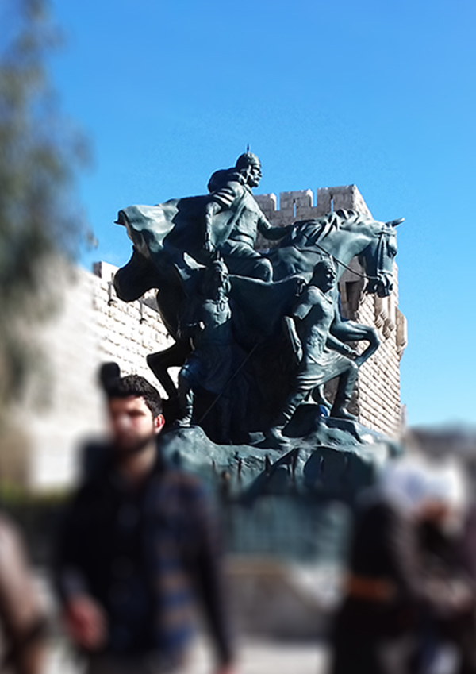
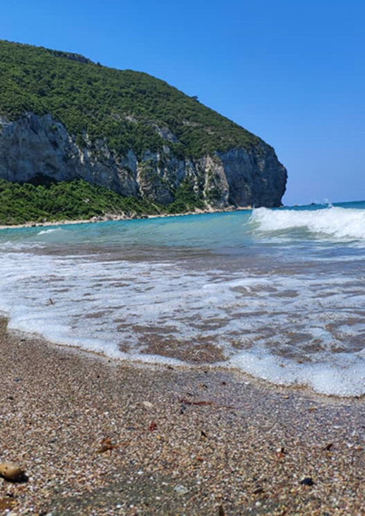
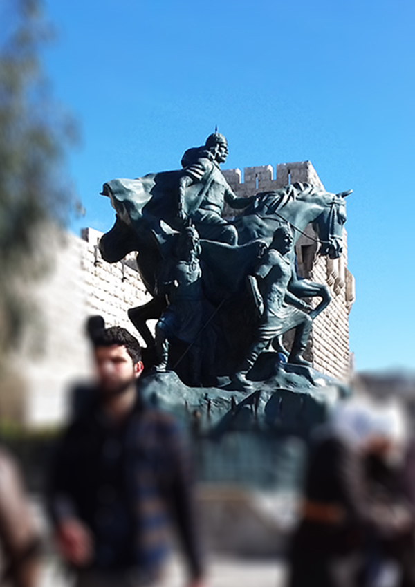
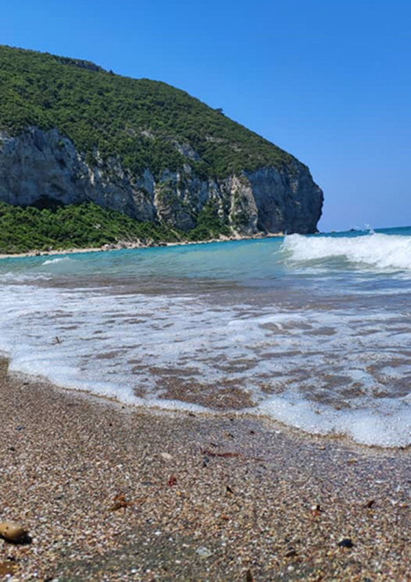

تكمن أهمية السياحة عامةً بأنَّها صناعة مستقلة تجذب السياح إلى منطقة ما لهدف معين، مما يساهم في توليد دخل لهذه المنطقة، أما على مستوى الأفراد فإنَّ السياحة تساهم في اكتشاف أماكن وثقافات جديدة، إضافة إلى المغامرات والمتعة، وعند تفصيل أهمية السياحة نذكر الآتي:
- تساهم السياحة في التقدم الاقتصادي للدول، إذ يساهم وجود السياح في دعم الاقتصاد، وذلك عن طريق زيارة الأماكن السياحية ومراكز التسوق، وهذا يساهم في حركة العملات في هذه الدول، ورفد خزينة الدولة عن طريق حركة البيع والشراء.
- تفتح السياحة الفرص لجذب المستثمرين إلى البلاد، وهذه يرفع من إمكانية تنظيم مشاريع جديدة فيها.
- تعدّ السياحة مصدراً لدخل العديد من العئلات، إذ خلقت العديد من فرص العمل في مجال الفنادق والضيافة، وقطاع الخدمات، والترفيه، والنقل، هذا إضافة إلى فرص العمل في مجال الأدلة السياحية وبيع القطع الأثرية والحرف اليدوية.
- تشجع السياحة على تطوير البنية التحتية في الأماكن السياحية والأماكن المحيطة بها، كالمطارات والطرق والاتصالات والفنادق، وكل ما يقدم للسائح أفضل تجربة عند زيارة المكان.
- تساهم السياحة في تبادل الثقافات وتقريب المسافات بين الشعوب، إذ يتعلم السياح ثقافات الأماكن الجديدة التي يزورونها من العادات والتقاليد واللغات وأمور كثيرة أخرى، وينقلون تجاربهم إلى بلادهم وخصوصاً الإجابية منها، وهذا يساهم في تقبل الآخرين وتنمية وتطور المجتمعات.
 


